ГОСУДАРСТВЕННЫЙ
КОМИТЕТ ПО ГРАЖДАНСКОМУ
СТРОИТЕЛЬСТВУ И АРХИТЕКТУРЕ ПРИ ГОССТРОЕ СССР
ВРЕМЕННАЯ
ИНСТРУКЦИЯ
ПО БЕЗОБОГРЕВНОМУ
ВЫПОЛНЕНИЮ ШВОВ
И СТЫКОВ
В КРУПНОПАНЕЛЬНЫХ
ЖИЛЫХ ЗДАНИЯХ
ВСН 26-76
Госгражданстрой
Утверждена
приказом Государственного комитета
по гражданскому строительству и архитектуре
при Госстрое СССР
от 4 ноября 1976 г. № 233
|
МОСКВА - 1977 |
Временная инструкция содержит основные положения по применению бетонов и растворов с противоморозными добавками для выполнения швов и стыков крупнопанельных зданий повышенной этажности в зимнее время в районах с низкими отрицательными температурами воздуха.
Временная инструкция предназначена для инженерно-технических работников проектных и строительных организаций.
Редакторы: инж. Ю.С. Самошкин (Госгражданстрой), канд. техн. наук В.Д. Смелик (СибЗНИИЭП).
|
Государственный комитет по гражданскому строительству и архитектуре при Госстрое СССР |
Ведомственные строительные нормы |
ВСН 26-76 |
|
|
Госгражданстрой |
|||
|
Временная инструкция по безобогревному выполнению швов и стыков крупнопанельных жилых зданий |
|||
|
Внесены СибЗНИИЭП Госгражданстроя |
Утверждены приказом Государственного комитета по гражданскому строительству и архитектуре при Госстрое СССР 4 ноября 1976 г. № 233 |
Срок введения в действие - 1 июля 1977 г. |
1.1. Настоящая Временная инструкция распространяется на работы по выполнению швов и стыков при зимнем монтаже крупнопанельных жилых зданий высотой до 12 этажей с несущими внутренними или несущими внутренними и наружными стенами с платформенным решением основного несущего стыка.
1.2. Временная инструкция предусматривает применение безобогревного метода выполнения швов и стыков в течение всего зимнего периода в районах со среднемесячной температурой наиболее холодного месяца до минус 20 °C при изменении текущих температур до минус 50 °C.
1.3. Твердение бетона и раствора в швах и стыках крупнопанельных зданий следует обеспечивать введением противоморозных добавок поташа и нитрита натрия. В качестве пластификатора в бетоны и растворы с поташом необходимо использовать сульфитно-дрожжевую бражку (СДБ).
1.4. Выбор той или иной противоморозной добавки необходимо производить в зависимости от конкретных условий строительства: ожидаемой температуры воздуха, требуемой прочности бетона и раствора, темпов строительства, используя номограммы на рис. 1 и 2 (см. разд. 3).
Замоноличивание швов и стыков крупнопанельных зданий при всем диапазоне температур для районов, отмеченных в п. 1.2 настоящей Инструкции, следует выполнять с использованием добавки поташа. Использование нитрита натрия допускается, если текущая температура в первые 10 сут после укладки бетона и раствора не ожидается ниже минус 25 °С.
1.5. Количество противоморозной добавки с учетом обеспечения твердения в ранние сроки и получения высокой прочности в позднем возрасте следует назначать для осенне-зимнего периода независимо от текущей температуры 10 % веса цемента, а для весеннего периода - согласно табл. 1.
Таблица 1
|
Количество противоморозной добавки, %, при текущей температуре наружного воздуха |
||||
|
до минус 5 °C |
до минус 15 °C |
до минус 25 °С |
ниже минус 25 °С |
|
|
Поташ |
5 |
7 |
10 |
10 |
|
Нитрит натрия |
5 |
10 |
10 |
- |
1.6. Введение сульфитно-дрожжевой бражки (СДБ) необходимо назначать для бетона и раствора с 5 % поташа в количестве 1 - 2 %, для бетона и раствора с 10 % поташа в количестве 1 - 1,5 %. Точное значение устанавливается строительной лабораторией путем выполнения пробных замесов.
2.1. Приготовление бетона и раствора следует выполнять на портландцементе и быстротвердеющем портландцементе активностью не ниже 400 кгс/см2 с содержанием С3А не более 8 %. Цементы должны удовлетворять требованиям государственных стандартов на портландцемент, шлакопортландцемент, пуццолановый портландцемент и их разновидности.
2.2. Щебень, используемый для приготовления бетона, должен удовлетворять требованиям ГОСТ 10268-70*.
2.3. Керамзит, используемый в качестве крупного заполнителя, должен соответствовать требованиям ГОСТ 9758-68.
2.4. Песок, используемый для приготовления бетона и раствора, должен соответствовать требованиям ГОСТ 8736-67*.
2.5. Вода не должна содержать вредных примесей, отрицательно влияющих на нормальное схватывание и твердение бетона и раствора, и удовлетворять требованиям ГОСТ 2874-73.
2.6. Поташ (К2СО3) должен удовлетворять требованиям ГОСТ 10690-73, а нитрит натрия - требованиям ГОСТ 19906-74.
2.7. Сульфитно-дрожжевая бражка (СДБ) должна удовлетворять требованиям Указаний по применению бетонов с добавкой концентратов сульфитно-дрожжевой бражки.
3.1. Горизонтальные и вертикальные швы между сборными элементами следует заполнять цементно-песчаным раствором. Горизонтальные и вертикальные стыки, являющиеся конструктивными элементами, после соединения металлических связей необходимо заполнять цементно-песчаным раствором, мелкозернистым тяжелым бетоном, легким бетоном на искусственных пористых заполнителях. Вид бетона, а также марка бетона и раствора должны быть указаны в проекте.
3.2. Монтаж конструкций верхних пяти этажей 9 - 12-этажных жилых домов в зимних условиях следует выполнять, если прочность бетона и раствора в горизонтальных и вертикальных стыках к моменту возведения шестого и последующих этажей достигает требуемых значений. Требуемая прочность бетона в вертикальных стыках, расположенных ниже монтируемых на пять этажей, должна составлять не менее 5 МПа. Требуемая минимальная прочность бетона или раствора горизонтальных швов и стыков на уровне перекрытий всех этажей, кроме верхних пяти, должна рассчитываться для каждого конкретного проекта дома с учетом характеристики климатического района строительства и конструктивных особенностей дома. Расчет требуемой прочности бетона и раствора должен выполняться проектной организацией, осуществляющей разработку или привязку проекта. Методика расчета требуемой минимальной прочности бетона или раствора в горизонтальных швах и стыках приведена в прил. 1 к настоящей Инструкции.
Рис. 1. Номограмма для определения марки бетона и раствора с добавкой поташа
t - средняя температура воздуха, °C; Rсж - гарантируемая относительная прочность бетона и раствора при сжатии, % R28; Rтр - минимальная требуемая прочность бетона и раствора, МПа; t - время твердения бетона и раствора, сут.
3.3. Марка бетона и раствора для несущих горизонтальных и вертикальных швов и стыков должна уточняться по номограммам, представленным на рис. 1 и 2.
Номограммы увязывают темпы возведения здания (рост нагрузок) со скоростью твердения бетона и раствора в шве и стыке.
Рис. 2. Номограмма для определения марки бетона и раствора с добавкой нитрита натрия (обозначения те же, что и на рис. 1)
Порядок определения марки следующий: проводится прямая от шкалы «сутки» до пересечения с нужной кривой Rсж. Найденная точка переносится параллельно шкале «сутки» до пересечения с отрезком Rтр заданного значения. Местоположение точки определяет марку по наибольшему значению.
3.4. Марку бетона и раствора для горизонтальных и вертикальных швов и стыков пяти верхних этажей следует назначать в соответствии с проектной маркой с учетом возможных потерь прочности при твердении на морозе:
R = Rпn,
где Rп - прочность бетона по проекту, МПа;
n - коэффициент, учитывающий снижение прочности в зависимости от температуры.
Значение коэффициента п следует принимать согласно табл. 2.
Таблица 2
|
Минимальная температура воздуха в первые 10 дней твердения, °C |
Коэффициент п |
|
|
тяжелый бетон и раствор |
легкий бетон |
|
|
До минус 20 |
1,2 |
1,1 |
|
Ниже минус 20 |
1,3 |
1,1 |
3.5. Приготовление бетона и раствора необходимо производить в приобъектных условиях в инвентарных смесителях. Емкость смесителя должна выбираться в зависимости от объема работ с таким расчетом, чтобы раствор (бетон) одного замеса был уложен в течение 1 ч при использовании поташа и 3 ч при использовании нитрита натрия.
Бетон и раствор с нитритом натрия допускается готовить централизованно и хранить на объектах в бункерах с подогревом.
3.6. Дозирование составляющих (сухой смеси, либо цемента и заполнителей, либо солевых растворов) в приобъектных условиях следует осуществлять по объему, для чего смесительные узлы должны быть оснащены дозаторами.
3.7. Приготовление бетона и раствора на объекте необходимо выполнять из сухой смеси. Хранить такую смесь необходимо в контейнерах с герметическим затвором. Продолжительность хранения зависит от первоначальной влажности смеси, надежности герметизации и определяется опытным путем. При отсутствии централизованного приготовления сухих смесей допускается приготовление бетона и раствора непосредственно на объекте, на приобъектных смесительных узлах из раздельно хранящихся цемента и заполнителей. Заполнители в этих случаях не должны содержать смерзшихся комьев.
3.8. Бетон и раствор в момент выхода из смесителя должны иметь температуру при введении поташа от 5 до 20 °С, при введении нитрита натрия от 5 до 35 °C. Оптимальная температура смеси в момент выхода из смесителя для обеспечения наибольших сроков сохранения подвижности уточняется путем лабораторных подборов.
Получение бетонной смеси с необходимой температурой осуществляется за счет использования подогретой воды или рабочего раствора соли и лишь при недостаточности тепла - за счет подогрева заполнителей, в первую очередь песка. Температура подогрева составляющих бетона назначается из расчета
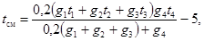
где tсм - температура бетонной смеси после перемешивания, °C;
g1, g2, g3, g4 - количество цемента (кг), песка (кг), щебня (гравия) (кг) и рабочего раствора соли (л) в 1 м3 бетонной смеси соответственно;
t1, t2, t3, t4 - температура цемента, песка, щебня (гравия) и рабочего раствора соли в момент загрузки в бетономешалку соответственно, °C.
3.9. Подвижность бетона и раствора в момент укладки в швы и стыки должна составлять 6 - 9 см.
3.10. Пластифицирующие и противоморозные добавки вводятся в бетон (раствор) в виде водных растворов рабочей концентрации. Рабочая концентрация растворов солей устанавливается строительной лабораторией. Расчет рабочей концентрации растворов и их расход на замес приведен в прил. 2 к настоящей Инструкции.
3.11. Растворы добавок рабочей концентрации готовятся в заводских условиях в емкостях путем растворения твердых, пастообразных или жидких продуктов. Для повышения скорости растворения воду следует подогревать до 40 - 70 °C и перемешивать растворы. Твердые продукты необходимо предварительно дробить. Растворы рабочей концентрации на объекте хранятся в емкостях с электронагревательными устройствами, снабженными термореле для регулирования температуры подогрева.
3.12. Подготовка швов и стыков к замоноличиванию производится согласно требованиям главы СНиП по правилам производства и приемки работ на бетонные и железобетонные конструкции сборные.
3.13. Особое внимание необходимо обращать на недопустимость превышения проектной толщины горизонтальных швов. Если превышение более 1 см, то монтаж верхних этажей должен разрешаться специальной комиссией. Устанавливать панели на слой замерзшего или схватившегося раствора запрещается. При обнаружении в швах бетона, не способного к дальнейшему твердению (что может произойти в случае применения частично схватившегося и разведенного водой бетона), необходимо произвести ремонт швов с заменой бракованных участков.
3.14. Использование бетонов и растворов с противоморозной добавкой поташа требует мер по сохранности от коррозии оцинкованных и алюминиевых закладных деталей, а с добавкой нитрита натрия - алюминиевых. Защитные мероприятия назначаются в соответствии с требованиями главы СНиП по проектированию защиты строительных конструкций от коррозии.
3.15. Операцию по укладке в швы и стыки бетона и раствора надлежит выполнять с использованием бетоно- и растворонасосов, пневмонагнетателей, вибробункеров вибробачков, инъекторов и т.д.
4.1. Общее руководство при выполнении швов и стыков должны осуществлять прораб и сменный мастер согласно требованиям главы СНиП по правилам производства и приемки работ на бетонные и железобетонные конструкции сборные и настоящей Инструкции.
4.2. Контроль приготовления раствора соли, пластификатора, проверка качества сухой смеси, состава и подвижности раствора, качества заделки швов раствором и т.д. должны возлагаться на работников строительной лаборатории и отдела технического контроля.
4.3. В условиях строительной площадки должен вестись журнал производства работ по выполнению швов и стыков безобогревным способом, в котором необходимо отмечать температуру наружного воздуха, состав сухой смеси, марку цемента, прочность раствора, а также другие показатели. Форма журнала и правила его заполнения приведены в прил. 3 настоящей Инструкции.
Рис. 3. График контроля прочности раствора и бетона в горизонтальных несущих стыках 9- и 12-этажных крупнопанельных жилых домов
а - для 9-этажных домов; б - для 12-этажных домов
4.4. Прочность раствора, укладываемого в горизонтальные швы и стыки крупнопанельного дома, контролируется путем испытания кубов размером 7´7´7 см. Прочность тяжелого бетона, укладываемого в вертикальные и горизонтальные стыки крупнопанельного дома, контролируется путем испытания кубов размером 10´10´10 см, а прочность керамзитобетона, укладываемого в вертикальные стыки, - кубов размером 15´15´15 см. Три контрольных куба раствора и бетона испытываются в возрасте 14 сут., три - в возрасте одного месяца, три - в момент окончания монтажа и три - через 28 сут. с момента оттаивания после максимального срока хранения на морозе. В каждую смену, когда ведется бетонирование стыков и замоноличивание швов, изготавливается по 12 кубов при монтаже технического подполья и всех этажей, кроме верхних пяти, и по 6 кубов - для верхних пяти этажей.
4.5. Невыполнение условия п. 3.2 настоящей Инструкции требует принятия мер по интенсификации твердения бетона и раствора путем обогрева.
4.6. Прогнозирование и оперативный контроль достаточной прочности раствора и бетона необходимо выполнять, используя график на рис. 3, путем нанесения на них результатов испытаний контрольных образцов. Если результаты испытаний располагаются выше указанной на графике кривой, то сохраняется запланированный темп монтажа. В противном случае темп корректируется в соответствии с фактической прочностью раствора или принимаются меры для ускорения твердения. Данным графиком надлежит пользоваться для контроля прочности бетона и раствора в горизонтальных стыках всех этажей, кроме верхних пяти. Методика привязки графика к конкретному объекту приведена в прил. 4 к настоящей Инструкции. По результатам испытаний оформляется акт-заключение о соответствии фактической и расчетной прочности бетона и раствора в несущих швах и стыках согласно прил. 5 к настоящей Инструкции. Без надлежащего оформления акта-заключения вести монтаж шестого и последующих этажей запрещается.
4.7. Сдача и приемка домов должны осуществляться в соответствии с техническими условиями на монтаж данной серии крупнопанельных жилых домов.
5.1. Производство работ требует соблюдения правил техники безопасности согласно требованиям главы СНиП по технике безопасности в строительстве, всех действующих правил охраны труда и техники безопасности, а также выполнения дополнительных требований по технике безопасности при использовании растворов с добавками поташа и нитрита натрия.
5.2. Сульфитно-спиртовая барда не взрывоопасна и не пожароопасна. Хранить твердые и порошкообразные концентраты барды необходимо в закрытых проветриваемых помещениях, располагая мешки в один ряд по вертикали завязкой вверх.
5.3. Нитрит натрия - ядовитое вещество. Попадание кристаллов и водного раствора нитрита натрия в организм человека приводит к отравлению, опасному для жизни. Нитрит натрия не взрывоопасен, но является окислителем для органических веществ. На всех емкостях, в которых готовится или хранится водный раствор нитрита натрия, должна быть предупредительная надпись: «Яд». Нитрит натрия при длительном воздействии вызывает головную боль, слабость, быструю утомляемость, потерю аппетита, плохой сон, боли в конечностях. Характерны также воспалительные изменения кожи кистей, стоп с пузырьковыми высыпаниями, трещинами, нагноениями.
5.4. Поташ вызывает раздражение дыхательных путей, конъюнктивит, желудочно-кишечные заболевания, изъявления слизистой носа, обращение с ним требует осторожности.
5.5. Приготовление строительных бетонов и растворов с противоморозными добавками допускается осуществлять как на заводе, так и в приобъектных условиях. Для подготовки добавок заводы оборудуются складскими помещениями и цехом по приготовлению водных растворов.
5.6. Склады для хранения противоморозных добавок размещаются в отдельно стоящих зданиях не ниже II степени огнестойкости (для кристаллического нитрита натрия и поташа) или на отгороженных площадках (для концентрированного жидкого нитрита натрия). При этом должны быть соблюдены следующие условия:
а) хранение кристаллического нитрита натрия и поташа осуществляется в таре завода-изготовителя (ящики, барабаны, бумажные мешки) в запираемом сухом помещении с обособленным выходом наружу. При ручной укладке следует располагать не более трех рядов по вертикали. Вход посторонним лицам в эти помещения должен быть запрещен.
Запрещается курить и вести открытым пламенем (газосварка, газорезка и др.) работы в помещении, где хранится кристаллический нитрит натрия. Не допускается хранение в одном помещении кристаллического нитрита натрия с твердыми и жидкими органическими веществами, имеющими кислую среду, так как при взаимодействии с ними образуются ядовитые газы окиси (NO) и двуокиси (NO2) азота;
б) хранение жидкого нитрита натрия осуществляется в цистернах и емкостях, ключ от которых в каждой смене должен находиться у одного ответственного инженерно-технического работника.
Автоцистерны, баки и другие емкости перед заполнением раствором нитрита натрия необходимо тщательно промывать водой, а если в них ранее хранилась кислота, то пропаривать;
в) лицо, выдающее кристаллический нитрит натрия в цех приготовления водного раствора и водный раствор нитрита натрия на строительные площадки, обязано предупреждать получателя о ядовитых свойствах нитрита натрия, после чего получатель расписывается в журнале выдачи нитрита натрия (прил. 6), который хранится на складе и в цехе.
5.7. Приготовление водных растворов противоморозных добавок должно производиться с соблюдением следующих условий:
а) рабочие солевые растворы готовятся только в заводских условиях. В случае приготовления растворов и бетонов на строительных площадках водные растворы добавок должны поставляться в виде готового раствора рабочей концентрации;
б) помещения, в которых производится приготовление растворов с добавками нитрита натрия и поташа, должны быть оборудованы приточно-вытяжной вентиляцией. Посторонним вход в эти помещения запрещен;
в) приготовление водных растворов нитрита натрия должно производиться в закрытых, полностью механизированных установках с минимальным числом работающих. Процесс загрузки нитрита натрия должен быть полностью механизирован и герметизирован.
5.8. Подачу водного раствора нитрита натрия в расходные емкости и бетоносмесители следует осуществлять по трубопроводам самотеком или с помощью насоса.
На строительных площадках перенос растворов солей вручную допускается в крайнем случае в наполненных не более чем на 3/4 высоты закрывающихся бачках.
5.9. Лаборатории, устанавливающие рабочие концентрации растворов химических добавок, должны быть оборудованы вытяжными шкафами.
5.10. На заводах, где готовятся рабочие растворы нитрита натрия, необходимо оборудовать бытовые помещения согласно требованиям табл. 4 главы СНиП по проектированию вспомогательных зданий и помещений промышленных предприятий при отнесении работающих с нитритом натрия к группе III «а». Для работающих на строительной площадке должен оборудоваться вагончик с умывальником и специальными шкафчиками для хранения спецодежды.
5.11. Перед допуском к работе рабочие должны пройти инструктаж по технике безопасности при работе с химическими добавками и ознакомиться с требованиями настоящего раздела Инструкции. Знания рабочих должны быть проверены.
5.12. К работам по приготовлению водного раствора нитрита натрия и поташа могут допускаться рабочие не моложе 18 лет, прошедшие медицинское освидетельствование и обученные безопасным методам работ с химикатами.
5.13. К работе по приготовлению раствора нитрита натрия и поташа нельзя допускать рабочих с повреждением кожного покрова (ссадины, ожоги, царапины, раздражения), поражением век и глаз.
5.14. Рабочие, приготавливающие рабочий водный раствор нитрита натрия и поташа, должны работать в комбинезонах и водоотталкивающей ткани, очках, утепленных резиновых сапогах и перчатках.
По окончании работы с нитритом натрия и поташом необходимо снять спецодежду (комбинезон, очки, перчатки и т.д.) и принять душ.
Методика расчета прочности раствора в горизонтальных швах и стыках крупнопанельного жилого дома
1. Приводятся краткая характеристика здания и исходные данные: конструктивная схема, характеристика несущих элементов (условия формования, материал, толщина, марка бетона), характеристика горизонтального стыкового соединения.
2. На основании проектных данных для наиболее невыгодного сочетания нагрузок определяются напряжения в опорных сечениях панелей (зонах, примыкающих к горизонтальным швам). Выбирается наиболее нагруженное стыковое соединение, определяется расчетное напряжение в опорной зоне панели smax.
3. Требуемая величина прочности раствора в горизонтальном шве стыкового соединения определяется по прочности опорного сечения в зоне, примыкающей к горизонтальным швам, в соответствии с Указаниями по проектированию конструкций крупнопанельных жилых домов по формуле
Nпр £ j1 Rпр F ψ mш, (1)
или в преобразованном к напряжению виде
s £ j1 Rпр ψ mш, (2)
где s = smax, МПа*;
___________
* Здесь и далее: 1 кгс/см2 ~ 9,8 · 104 Па ~ 105 Па ~ 0,1 МПа.
Rпр - расчетное сопротивление бетона панелей;
ψ - коэффициент, учитывающий эксцентриситет приложения вертикальной нагрузки и принимаемый в зависимости от относительного эксцентриситета и материала панели;
j1 = j · k - коэффициент, учитывающий влияние гибкости панели.
Здесь k - коэффициент, учитывающий влияние внецентренно приложенной нагрузки, определяется по формуле
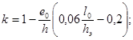
j - коэффициент продольного изгиба при центральном сжатии, для опорных сечений j = 1;
mш - коэффициент условий работы, учитывающий влияние горизонтальных швов и заделку перекрытий, определяемый для платформенного опирания панелей.
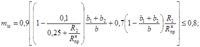
при контактном стыке:
Выразим значение mш из формулы (2), тогда
Значение требуемой прочности раствора в шве, выраженное через R2, рассчитаем в зависимости от типа стыка по формуле (4) или (5), подставив значение mш, полученное из формулы (6).
Пример. Определить требуемую минимальную прочность раствора в горизонтальном шве 12-этажного крупнопанельного дома серии 1-464Д-Э47-1К для наиболее нагруженных внутренних стеновых панелей. Панели внутренних стен кассетного формования выполнены из тяжелого бетона М300, толщина панелей 14 см. Опирание перекрытий платформенное, глубина опирания перекрытия 6 см.
На основании расчета выяснено, что наиболее нагруженным является верхний шов цокольной панели 12 ВСЦ1-5. Расчетные напряжения в шве, подсчитанные при сочетании вертикальной нагрузки от собственного веса конструкций и ветровой нагрузки, приходящейся на стык, равны: s = smax = 4,8 МПа;
Rпр = 0,85Rтабл = 9,8 МПа;
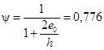
отсюда по формуле (5) mш = 0,676.
Подставляя в формулу (4) значение mш и принимая
b1 = b2 = 6 см, 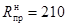
для М300, определяем требуемую прочность раствора шва
R2 = 7,5 МПа.
Таблица 3
|
Требуемая прочность раствора на этажах, МПа |
|||||||
|
первом и в техподполье |
втором |
третьем |
четвертом |
пятом |
шестом |
седьмом |
|
|
6 |
3 |
||||||
|
7 |
3 |
3 |
|||||
|
8 |
3 |
3 |
3 |
||||
|
9 |
4,5 |
3 |
3 |
3 |
|||
|
10 |
4,5 |
4,5 |
3 |
3 |
3 |
||
|
11 |
7,5 |
4,5 |
4,5 |
3 |
3 |
3 |
|
|
12 |
7,5 |
7,5 |
4,5 |
4,5 |
3 |
3 |
3 |
В табл. 3 приводятся значения требуемой минимальной прочности раствора горизонтальных швов, определенные для типового проекта 12-этажного дома серии 1-464Д климатического подрайона IB.
Расчет рабочей концентрации растворов и их расход на замес
Расчет расхода солевых добавок и пластификаторов при температуре 20 °C.
Количество концентрированного раствора сульфитно-дрожжевой бражки (СДБ) или сульфитно-спиртовой барды (ССБ) на один замес определяется по формуле
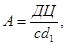
где А - искомое количество концентрированного раствора СДБ, л;
Ц - количество цемента, кг на замес;
Д - количество добавки (по сухому веществу), % веса цемента;
c - концентрация приготовленного раствора добавки, % (по сухому веществу) (табл. 4);
d1 - удельный вес раствора добавки.
Из общего водосодержания бетона В вычитается вода, введенная вместе с СДБ:
Вост = В - (Аd - Д1), (2)
где Д1 - количество добавки (по сухому веществу), кг.
При содержании соли в растворе (бетоне), равном, например, 0,1Ц, и остаточном водосодержании смеси Вост количество соли в кг, отнесенное к 1 л воды, составит 0,1Ц/Вост.
Плотность такого солевого раствора, согласно данным табл. 5 и 6, составит d. Из этих же таблиц определяем, что в 1 л солевого раствора плотностью d содержится Р (кг) сухой соли. При общем расходе соли на замес 0,1Ц количество солевого раствора равно 0,1Ц/Р.
При расходе соли на замес 0,05Ц количество литров солевого раствора на замес определяется как 0,05Ц/Р.
При температуре раствора поташа, отличающейся от 20 °C, вводится поправка на плотность.
Пример. Определить концентрацию и расход на 1 м3 монтажного раствора водного раствора поташа и расход раствора СДБ при температуре 20 °С, если используется раствор с отношением цемента к песку, как 1:1, при расходе цемента 800 кг на 1 м3, водоцементном отношении 0,33 и расходе поташа 10 % веса цемента. Расход СДБ составляет 1 % веса цемента при удельном весе раствора СДБ 1,043 и концентрации 10 %.
Расчет. Расход концентрированного раствора СДБ на замес объема 1 м3 составит:
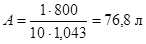
Остаточное водосодержание определяется по формуле:
Вост = 800 - 0,33 - (76,8 · 1,043 - 8) = 192 л.
Количество соли, отнесенное к 1 л воды, равняется:
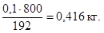
Плотность такого водного раствора поташа по табл. 3 составляет 1,291. В каждом литре такого раствора содержится 0,379 кг безводного поташа. При общем расходе на замес соли 10 % веса цемента количество литров солевого раствора составляет:
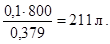
Содержание соли в 1 л раствора не зависит от его температуры. Плотность раствора определенной концентрации и количество соли в 1 л изменяются при охлаждении или нагревании раствора, вследствие чего приведенные в табл. 5 и 6 данные действительны только при температуре раствора 20 °C.
Определение содержания соли в водном растворе при температуре, отличающейся от +20 °С.
Изменение плотности раствора с изменением температуры подчиняется закономерности:
dt = d20 - A · (t - 20), (3)
где dt - плотность раствора при требуемой температуре, г/см3;
d20 - плотность раствора при 20 °C, г/см3;
А - температурный коэффициент плотности;
t - температура, °C.
Таблица 4
Содержание сульфитно-дрожжевой бражки в растворах и их плотность
|
Плотность раствора при 20 °C, г/см3 |
Содержание безводной СДБ, кг |
Концентрация раствора, % |
Плотность раствора при 20 °C, г/см3 |
Содержание безводной СДБ, кг |
|||
|
в 1 л раствора |
в 1 кг раствора |
в 1 л раствора |
в 1 кг раствора |
||||
|
1 |
1,004 |
0,01 |
0,01 |
12 |
1,053 |
0,126 |
0,12 |
|
2 |
1,009 |
0,02 |
0,02 |
14 |
1,053 |
0,149 |
0,14 |
|
3 |
1,013 |
0,031 |
0,03 |
16 |
1,073 |
0,171 |
0,16 |
|
4 |
1,017 |
0,041 |
0,04 |
18 |
1,083 |
0,195 |
0,18 |
|
5 |
1,021 |
0,051 |
0,05 |
20 |
1,091 |
0,218 |
0,2 |
|
6 |
1,025 |
0,061 |
0,06 |
25 |
1,117 |
0,279 |
0,25 |
|
7 |
1,029 |
0,072 |
0,07 |
30 |
1,144 |
0,343 |
0,3 |
|
8 |
1,033 |
0,083 |
0,08 |
35 |
1,173 |
0,412 |
0,35 |
|
9 |
1,038 |
0,093 |
0,09 |
40 |
1,202 |
0,48 |
0,4 |
|
10 |
1,043 |
0,104 |
0,1 |
50 |
1,266 |
0,633 |
0,5 |
Содержание соли в 1 л раствора определяют по формуле
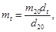
где mt - содержание соли в 1 л раствора при требуемой температуре, кг;
m20 - содержание соли в 1 л раствора при 20 °С, кг.
Пример. Требуется определить содержание поташа в 1 л раствора, если плотность его при 0 °С составляет 1,39. По табл. 3 находим, что температурный коэффициент плотности при ее значении 1,39 составляет около 0,00055. Подставляя имеющиеся данные в формулу, находим, что при 20 °C этот раствор имел бы плотность:
d20 = l,39 + 0,00055(0 - 20 °C) = 1,379, а раствор с такой плотностью содержит в 1 л 0,511 кг поташа. Тогда в 1 л раствора с плотностью 1,39 при 0 °C содержится поташа:
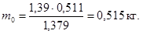
Таблица 5
Содержание поташа в растворах, их плотность и температура замерзания
|
Плотность раствора при 20 °С, г/см3 |
Температурный коэффициент плотности |
Содержание безводного К2СО3, кг |
Температура замерзания, °C |
||
|
в 1 л раствора |
в 1 кг раствора |
на 1 л воды |
|||
|
1,016 |
0,00024 |
0,02 |
0,02 |
0,02 |
-0,7 |
|
1,035 |
0,00027 |
0,041 |
0,04 |
0,042 |
-1,3 |
|
1,053 |
0,0003 |
0,063 |
0,06 |
0,064 |
-2 |
|
1,072 |
0,00033 |
0,086 |
0,08 |
0,087 |
-2,8 |
|
1,09 |
0,00035 |
0,109 |
0,1 |
0,111 |
-3,6 |
|
1,11 |
0,00037 |
0,133 |
0,12 |
0,136 |
-4,4 |
|
1,129 |
0,00039 |
0,158 |
0,14 |
0,163 |
-5,4 |
|
1,139 |
0,0004 |
0,171 |
0,15 |
0,176 |
-5,9 |
|
1,149 |
0,00041 |
0,184 |
0,16 |
0,19 |
-6,4 |
|
1,159 |
0,00042 |
0,197 |
0,17 |
0,205 |
-7 |
|
1,169 |
0,00043 |
0,21 |
0,18 |
0,22 |
-7,6 |
|
1,179 |
0,00043 |
0,224 |
0,19 |
0,235 |
-8,2 |
|
1,19 |
0,00044 |
0,238 |
0,2 |
0,25 |
-8,9 |
|
1,2 |
0,00045 |
0,252 |
0,21 |
0,266 |
-9,6 |
|
1,211 |
0,00046 |
0,266 |
0,22 |
0,282 |
-10,3 |
|
1,221 |
0,00046 |
0,281 |
0,23 |
0,299 |
-11,2 |
|
1,232 |
0,00047 |
0,296 |
0,24 |
0,316 |
-12,1 |
|
1,243 |
0,00048 |
0,311 |
0,25 |
0,333 |
-13 |
|
1,254 |
0,00049 |
0,326 |
0,26 |
0,351 |
-14,1 |
|
1,265 |
0,00049 |
0,341 |
0,27 |
0,369 |
-15,1 |
|
1,276 |
0,0005 |
0,357 |
0,28 |
0,391 |
-16,2 |
|
1,287 |
0,0005 |
0,373 |
0,29 |
0,408 |
-17,4 |
|
1,298 |
0,00051 |
0,39 |
0,3 |
0,429 |
-18,7 |
|
1,321 |
0,00052 |
0,423 |
0,32 |
0,47 |
-21,5 |
|
1,344 |
0,00053 |
0,457 |
0,34 |
0,515 |
-24,8 |
|
1,367 |
0,00053 |
0,492 |
0,36 |
0,563 |
-28,5 |
|
1,39 |
0,00054 |
0,528 |
0,38 |
0,613 |
-32,5 |
|
1,414 |
0,00055 |
0,566 |
0,4 |
0,667 |
-36,5 |
Таблица 6
Содержание нитрита натрия в растворах, их плотность и температура замерзания
|
Температурный коэффициент плотности |
Содержание безводного NaNO2, кг |
Температура замерзания, °C |
|||
|
в 1 л раствора |
в 1 кг раствора |
на 1 л воды |
|||
|
1,011 |
0,00023 |
0,02 |
0,02 |
0,02 |
-0,8 |
|
1,024 |
0,00027 |
0,041 |
0,04 |
0,042 |
-1,8 |
|
1,038 |
0,0003 |
0,062 |
0,06 |
0,064 |
-2,8 |
|
1,052 |
0,00033 |
0,084 |
0,08 |
0,087 |
-3,9 |
|
1,065 |
0,00036 |
0,106 |
0,1 |
0,111 |
-4,7 |
|
1,078 |
0,00039 |
0,129 |
0,12 |
0,136 |
-5,8 |
|
1,092 |
0,00042 |
0,153 |
0,14 |
0,163 |
-6,9 |
|
1,099 |
0,00043 |
0,164 |
0,15 |
0,176 |
-7,5 |
|
1,107 |
0,00044 |
0,177 |
0,16 |
0,19 |
-8,1 |
|
1,114 |
0,00045 |
0,189 |
0,17 |
0,205 |
-8,7 |
|
1,122 |
0,00047 |
0,202 |
0,18 |
0,22 |
-9,2 |
|
1,129 |
0,00049 |
0,214 |
0,19 |
0,235 |
-10 |
|
1,137 |
0,00051 |
0,227 |
0,2 |
0,25 |
-10,8 |
|
1,145 |
0,00053 |
0,24 |
0,21 |
0,266 |
-11,7 |
|
1,153 |
0,00055 |
0,254 |
0,22 |
0,282 |
-12,5 |
|
1,161 |
0,00056 |
0,267 |
0,23 |
0,299 |
-13,9 |
|
1,168 |
0,00058 |
0,28 |
0,24 |
0,316 |
-14,4 |
|
1,176 |
0,0006 |
0,293 |
0,25 |
0,333 |
-15,7 |
|
1,183 |
0,00061 |
0,308 |
0,26 |
0,351 |
-17 |
|
1,191 |
0,00062 |
0,322 |
0,27 |
0,369 |
-18,3 |
|
1,193 |
0,00065 |
0,336 |
0,28 |
0,391 |
-19,6 |
|
1,206 |
- |
0,35 |
0,29 |
0,408 |
(-17,8) |
|
1,214 |
- |
0,364 |
0,3 |
0,429 |
(-16,5) |
|
1,23 |
- |
0,394 |
0,32 |
0,47 |
(-14) |
|
1,247 |
- |
0,424 |
0,34 |
0,515 |
(-11,7) |
|
1,264 |
- |
0,455 |
0,36 |
0,563 |
(-9,5) |
|
1,282 |
- |
0,488 |
0,38 |
0,613 |
(-7,5) |
|
1,299 |
- |
0,52 |
0,4 |
0,667 |
(-6) |
Примечание. В скобках указана температура выкристаллизовывания избытка соли до замерзания раствора при эвтектической температуре, равной минус 19,6 ° для водных растворов нитрита натрия.
Правила заполнения журнала производства работ по выполнению швов и стыков безобогревным способом
1. Ответственность за правильное и систематическое ведение журнала, а также за его хранение несут соответствующие производители работ.
При замене на объекте одного производителя работ другим журнал передается по приемо-сдаточному акту с соответствующей записью в самом журнале.
2. Лаборанты, закрепленные за объектом, должны ежедневно делать в журнале соответствующие записи:
дату и место укладки раствора или бетона - в гр. 1, 3;
характеристику сухой смеси - в гр. 4, 5;
минимальную температуру наружного воздуха в течение первой десятидневки после укладки - в гр. 6;
данные по приготовлению бетона и раствора - в гр. 7 - 12;
данные протоколов испытаний на прочность при сжатии контрольных образцов-кубов - в гр. 13 - 17;
данные протоколов испытаний на прочность при сжатии образцов пластин - в гр. 18 - 19.
3. Лица, контролирующие строительство, в том числе руководители строительства и представители заказчика, инженер по технике безопасности имеют право вносить в журнал свои замечания в гр. 21.
Не позднее чем на следующий день после получения замечаний, в журнале должны быть сделаны записи о мерах, принятых в связи с этими замечаниями.
4. Журнал должен быть пронумерован, прошнурован, скреплен печатью строительной организации, ответственной за строительство объекта, и подписан ее руководителем и начальником производственного отдела. Все записи в журнале работ следует делать чернилами.
После сдачи объекта в эксплуатацию журнал работ передается в архив генерального подрядчика для хранения в установленном порядке.
5. При передаче строительства другой организации передаются также и журнал производства работ по выполнению швов и стыков безобогревным способом, контрольные образцы бетона и раствора, предназначенные для испытания в более поздние сроки, акты испытания контрольных образцов, паспорта на сухую смесь.
ЖУРНАЛ
производства работ по выполнению горизонтальных и вертикальных швов
безобогревным способом
|
Дата |
Основные работы |
Место укладки раствора или бетона (№ этажа, захватки по чертежу) |
Характеристика сухой смеси |
Температура наружного воздуха, °С |
Приготовление раствора или бетона |
||||||
|
состав Ц/П |
влажность, % |
количество добавки, % веса цемента |
плотность солевого раствора по ареометр/, г/см3 |
плотность раствора СДБ по ареометру, г/см3 |
подвижность раствора по осадке конуса, см |
время сохранения раствором или бетоном рабочей подвижности, ч |
темпера тура раствора или бетона на выходе из смесителя, °С |
||||
|
1 |
2 |
3 |
4 |
5 |
6 |
7 |
8 |
9 |
10 |
11 |
12 |
|
Изготовление контрольных образцов |
Контроль прочности раствора по СН 290-74 |
Толщина шва, мм |
Замечания по контрольной проверке (марка цемента, качество других исходных материалов, качество монтажа) |
Фамилия и инициалы исполнителя и его подпись |
|||||
|
дата изготовления образцов, число на одну захватку, шт., маркировка |
прочность при сжатии МПа, при отрицательной температуре в возрасте суток |
||||||||
|
14 |
28 |
прочность раствора или бетона через 28 сут с момента оттаивания, МПа |
место закладки пластин (№ этажа, захватка по чертежу), маркировка |
прочность при сжатии, МПа |
|||||
|
13 |
14 |
15 |
16 |
17 |
18 |
19 |
20 |
21 |
22 |
Примечание. Состав Ц/П - отношение цемента к песку в сухой смеси.
Методика привязки графика контроля прочности раствора в швах и стыках к конкретному объекту
График контроля прочности раствора в горизонтальных швах применительно к конкретным условиям строительства дан на примере 9-этажного дома серии 1-464Д и приведен на рис. 4. Для удобства работы шкала графика представлена не в процентах, а в натуральных единицах. При переводе шкалы считали, что деление, равное 100 %, соответствует наибольшему табличному значению прочности раствора Rтр, приведенному в прил. 1 настоящей Инструкции, которое составляет 7,5 МПа. Прочие числа на шкале рассчитываются пропорционально процентам. Например, вместо Rтр = 50 % на шкале нужно поставить Rтр = 0,5 · 7,5 = 3,75 МПа.
Рис. 4. График контроля прочности раствора в горизонтальных несущих швах 9-этажного крупнопанельного дома
n - число смонтированных этажей под контролируемым швом
|
Гор._______________________ «_____»___________197__ г. АКТ-ЗАКЛЮЧЕНИЕ
|
|||||||||||||||||
|
Сколько этажей возведено |
Требуемая прочность бетона и раствора по этажам, МПа |
Фактическая прочность по этажам, МПа |
|
|
этаж |
Rтр |
Rфакт. |
|
|
Нуль |
|||
|
1 |
|||
|
2 |
|||
|
3 |
|||
|
4 |
|||
|
5 |
|||
|
и т.д. |
|||
Запись: продолжать строительство, прекратить, скорректировать ППР, произвести усиление конструкций и т.д. (нужное подчеркнуть или дописать).
Зав. строительной лабораторией
Прораб
Инженер ОТК
|
Наименование химиката, его состав и концентрация |
Количество, кг |
Получатель, должность, фамилия |
Дата выдачи химиката |
О ядовитых свойствах предупрежден. Роспись получателя |
Роспись выдающего химикаты |
СОДЕРЖАНИЕ